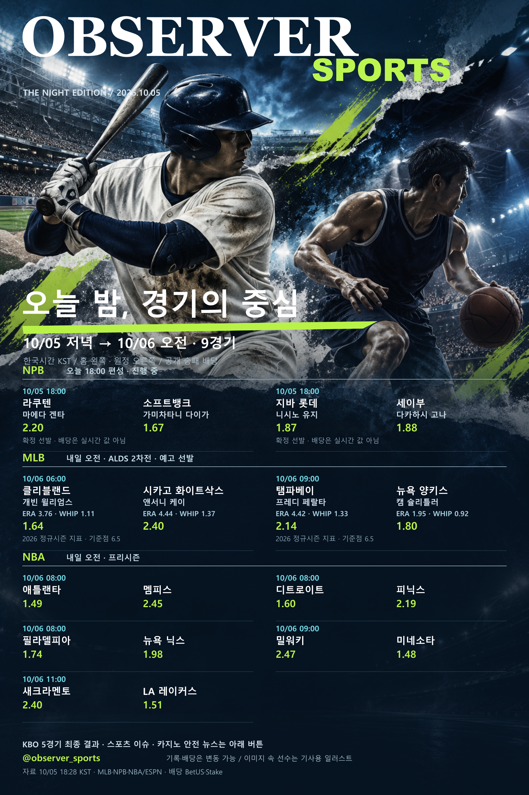

OBSERVER / PUBLIC ARCHIVE
10월 5일 밤, 6일 오전
경기표 자료실
이 페이지는 원본 포스터 보관과 출처 연결을 위한 공개 아카이브입니다. 지난 날짜 자료는 최신 경기표로 해석하지 마세요.

자료 범위
NPB 2 · MLB 2 · NBA 프리시즌 5경기. 한국시간, 홈 왼쪽·원정 오른쪽. 2026 정규시즌 ERA·WHIP와 공개 승패 배당 조회값을 사용했습니다. 선수 비주얼은 기사 설명용 일러스트입니다.
공개 원문